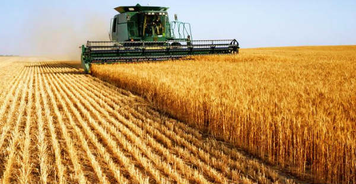

Wheat Harvesting
- Harvesting: The rain-fed crop reaches the harvest stage much earlier than the irrigated crop. The crop is harvested when the grains become hard and the straw becomes dry and brittle.The harvesting is mostly done by sickle. The crop is threshed by treading with cattle on the threshing-flour or by power driven thresher.
- Yield: The national average yield of wheat grain is about 12 to 13.8 quintals per hectare.
- Storage: The grains should be thoroughly dried before storage. The storage life of the grain is closely related to its moisture content. Grains with less than 10 percent moisture store well. The storage pits, bins or godowns should be moisture-proof and should be fumigated to keep down the stored – grain pests including rats. Zinc phosphide is very effective against rats.